h = [1/10, 1/20, 1/40];
k = [1/10, 1/20, 1/40, 1/160];
e1 = exact(k(1), h(1));
e2 = exact(k(2), h(2));
e3 = exact(k(3), h(2));
e4 = exact(k(3), h(3));
e5 = exact(k(4), h(3));
s1 = cranknicolson(k(1), h(1), e1);
figure (1);
plotfigures(k(1), h(1), s1, 'h = 1/10, \lambda = 1 and \mu = 10');
figure(2)
plotfigures(k(1), h(1), e1, 'Analytic Solution');
figure(3)
errors(s1, k(1), h(1), 'h = 1/10, \lambda = 1 and \mu = 10',3);
s2 = cranknicolson(k(2), h(2), e2);
figure (5);
plotfigures(k(2), h(2), s2, 'h = 1/20, \lambda = 1');
figure(6)
plotfigures(k(2), h(2), e2, 'Analytic Solution');
figure(7)
errors(s2, k(2), h(2), 'h = 1/20, \lambda = 1',7);
s3 = cranknicolson(k(3), h(2), e3);
figure (9);
plotfigures(k(3), h(2), s3, 'h = 1/20, \mu = 10');
figure(10)
plotfigures(k(3), h(2), e3, 'Analytic Solution');
figure(11)
errors(s3, k(3), h(2), 'h = 1/20, \mu = 10', 11);
s4 = cranknicolson(k(3), h(3), e4);
figure (13);
plotfigures(k(3), h(3), s4, 'h = 1/40, \lambda = 1');
figure(14)
plotfigures(k(3), h(3), e4, 'Analytic Solution');
figure(15)
errors(s4, k(3), h(3), 'h = 1/40, \lambda = 1', 15);
s5 = cranknicolson(k(4), h(3), e5);
figure (17);
plotfigures(k(4), h(3), s5, 'h = 1/40, \mu = 10');
figure(18)
plotfigures(k(4), h(3), e5, 'Analytic Solution');
figure(19)
errors(s5, k(4), h(3), 'h = 1/40, \mu = 10', 19);
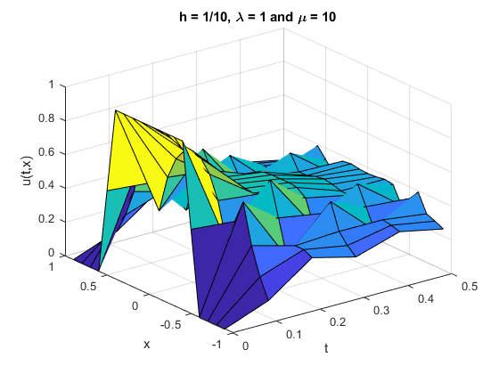 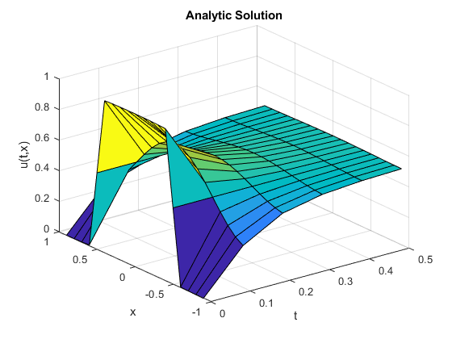 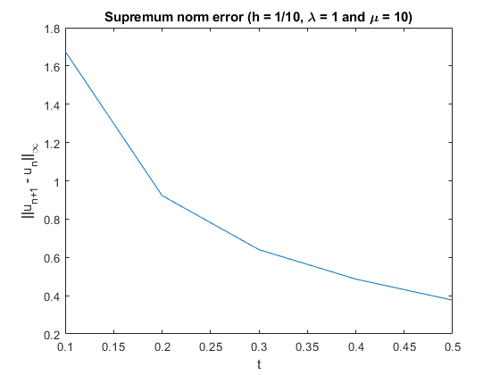 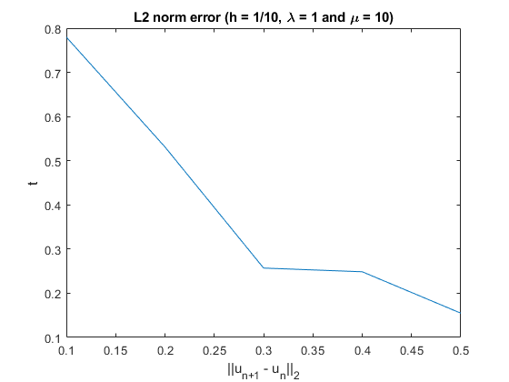 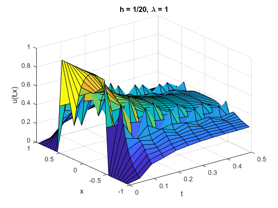 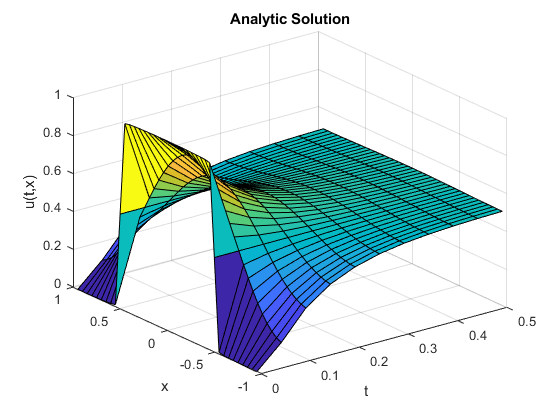 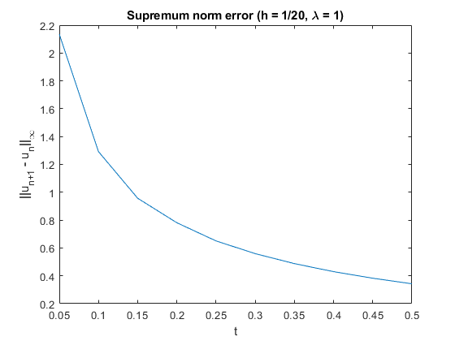 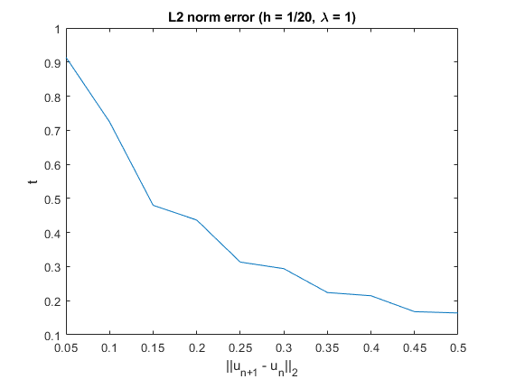 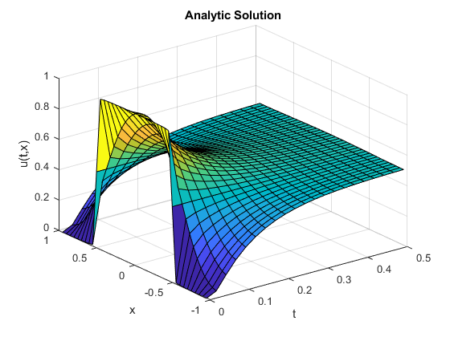 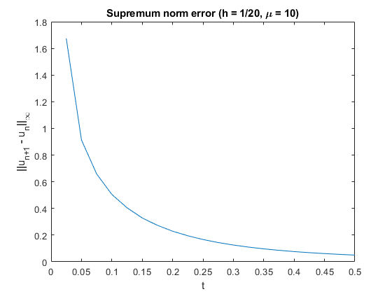 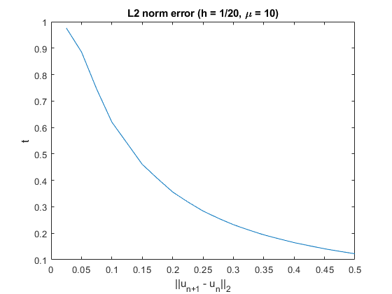 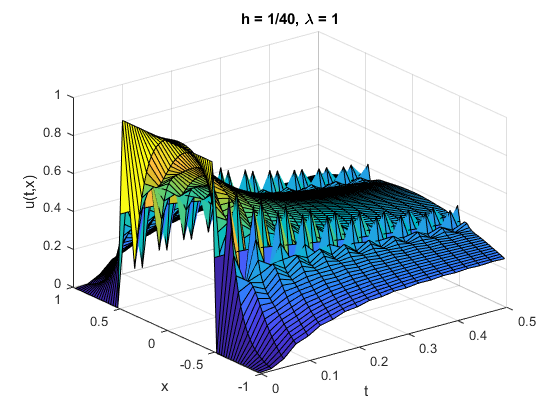 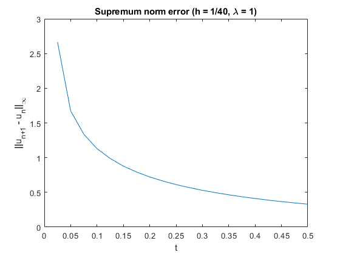 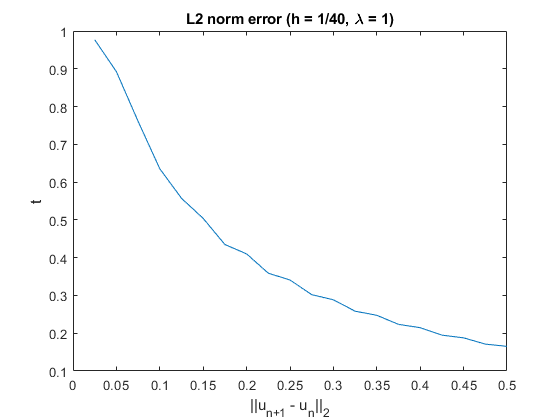 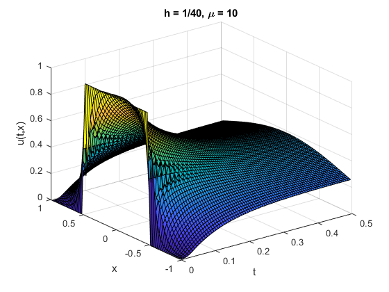 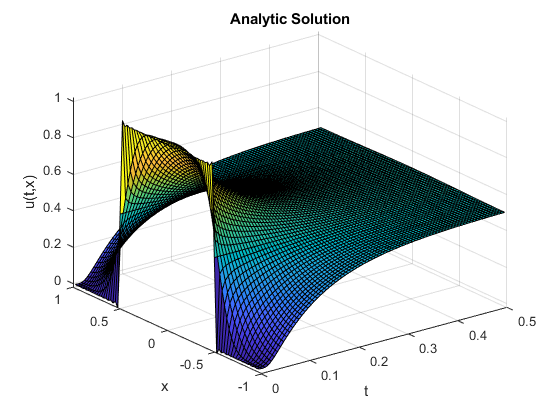 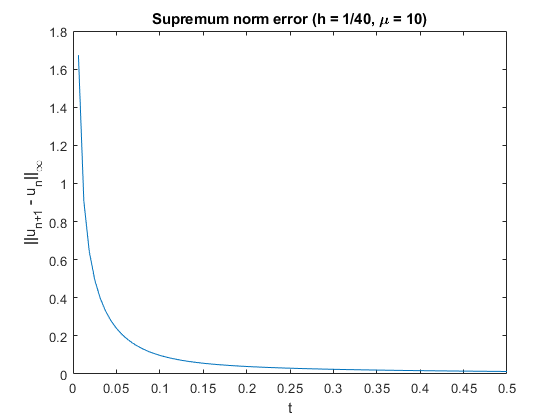 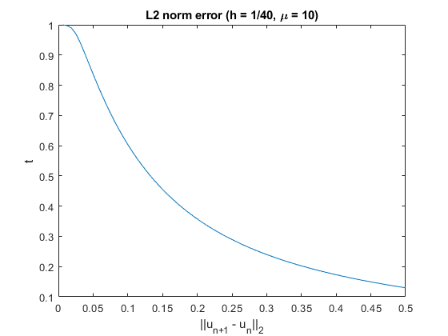